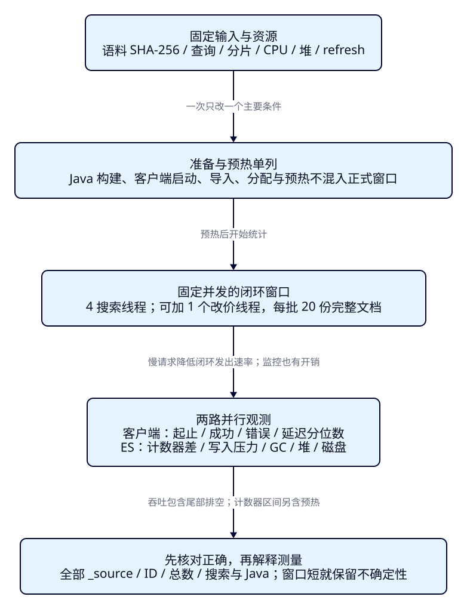
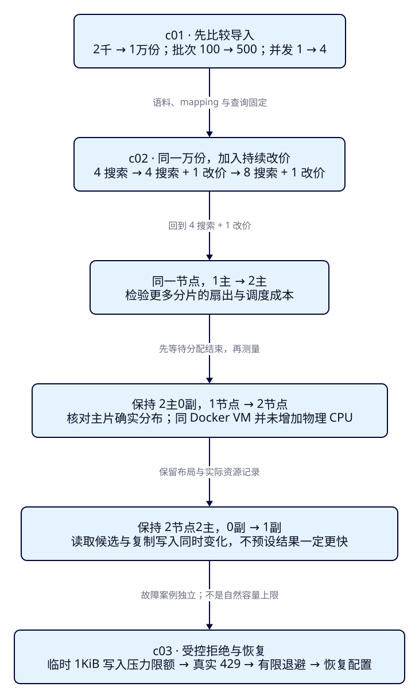

资料和请求变多，
怎样测量搜索还能承受多少？
节假日前，运营要把几千份旅游资料扩到更多目的地，同时增加改价频率。游客仍搜索“西湖”，结果虽然正确，提交后却可能等得更久。F42让我们能定位旧价与补偿错误；这一课先固定语料、请求与资源，再比较导入方式、查询加更新的负载、分片和节点布局。目标是写出有条件、有正确性证据的测量报告，并知道目前的实验还不足以回答哪些容量问题。
学完能用输出证明什么
- 用同一语料哈希比较Bulk批次和并发，分别报告成功文档吞吐、批次延迟、条级错误与计时范围。
- 解释混合负载下的搜索分位数、更新速率和资源变化，用实际分片分布核对布局，拒绝从“多一台容器”直接推导扩容收益。
- 区分自然负载与受控429，证明有限退避、失败不算成功、恢复配置后完整重放，并列出当前容量结论的限制。
本课目录
图解跳转：01 · 一次测量的边界 · 02 · 逐个改变比较条件
1. “还能承受多少”需要附带什么条件？
Elasticsearch保存便于搜索的派生文档，业务数据库仍保存事实。资料增加会改变索引大小、命中集合和缓存工作集；查询增加会让请求竞争CPU、线程与连接；改价又需要索引新版本、复制和后续刷新。这些工作共享资源。单独导入很快，不能证明同时搜索和改价时游客的等待仍可接受。
先把问题写成可以检查的句子：“在这份语料、这组查询和更新比例、这套节点资源下，持续一段时间，搜索成功率和p95满足团队约定，更新也完成，且资源没有持续恶化。”允许的p95、错误率、更新积压和故障余量由业务决定。本文不编造团队SLO，也不把某次成功QPS称为容量上限。
观察窗继续复用F07。输入“西湖”、HZ、200元预算、中心30.25/120.15、半径3km，卡片从p000001的61元变成70元；浏览器→本机Java→ES的路径保持一致。负载工具直接访问隔离ES，用来减少展示壳和网页渲染对比较的干扰。因此下面的吞吐是这条ES请求路径的测量，网页交互只核对功能，不能当成整个网站的并发能力。负载DSL固定size=10，并由独立Java读取相同query.json；观察窗保留F07的字段组合与最多20条返回，使用本课观察输入，按实际回传的esRequest做REST重放。这两条路径分别核对，不能声称请求正文或成本完全相同。

2. 吞吐、分位数和拒绝，各自数什么？
一次Bulk装100份文档，返回100个成功条目：它是1次请求、100次逻辑写入。把请求数当文档数，会把导入能力少算两个数量级；把失败或重试也算进成功文档，会反过来夸大能力。本课首次导入用稳定业务ID，逐项统计成功与失败，另存尝试次数和429项次。重试成功只累计该项最终成功一次。
左右滑动表格查看全部列。
| 指标 | 本课口径 | 不能据此声称 |
|---|---|---|
| 导入成功文档/秒 | 成功条目数÷整个并发导入墙钟时间 | 不是单个请求文档数÷平均延迟；不含语料生成、JVM启动、预热、refresh与验收 |
| Bulk p95 | 每个逻辑批次从组装请求到最终结果，包含退避；nearest-rank，取排序后ceil(0.95×n)项 | 不是单份文档的延迟；小样本p99很可能就是最大值 |
| 搜索p95 / p99 | 每次请求客户端起止，含序列化、连接等待、网络、服务端及解析；失败样本也保留 | 不是ES响应中的took，也不是浏览器端到端等待 |
| 搜索请求/秒、更新文档/秒 | 预热后开始的新请求，全部等结束；成功数÷正式起点到最后请求排空的实际秒数 | 两种单位不能相加成“总QPS”；尾部排空时间不能消失 |
| 拒绝/资源 | 客户端状态与条级结果、同一node ID累计计数器前后差；每秒采样堆、CPU等 | 线程池任务数不等于HTTP请求数；采样最大值不等于真实峰值 |
例如五次延迟为2、3、4、8、100ms，这是人工示意：平均23.4ms，nearest-rank p95是100ms。平均数掩盖了最后一次等待。不能把多个分组的p95再平均成总体p95；要合并原始样本再求分位数。本课保存逐请求样本，让读者能复算。
负载采用固定并发的闭环：每个线程等上一次响应结束才发下一次，搜索线程数为4或8，更新线程最多1个。服务变慢时发出速率也下降，因而不会完整重现独立游客按固定到达率继续涌入的排队尾延迟。这种漏掉等待的现象常称coordinated omission。本文不用其分位数承诺开放到达流量的SLO；需要那类结论时，应另用能记录计划发出、实际发出与完成时间的到达率模型，连同客户端积压一起检查。Elastic对coordinated omission的说明解释了为什么缺掉请求会扭曲延迟分布。
3. 固定语料、隔离资源，再开始比较
生成器f43-v1不使用随机数：p000001至p010000，奇数在HZ、偶数在SZ；编号模4余1的名称含“西湖 游船”，其余为“山水 公园”。价格6000＋(编号模20)×100分、币种CNY；编号模10余0下架；坐标在杭州中心附近，summary为固定重复文本。重复文本让压缩和缓存更容易，均匀分布也不能代表真实热点，这是有意简化的教学语料。2000与10000份的目标命中分别500与2500，首页固定p000001、p000005直到p000037。
def corpus(count):
for i in range(1,count+1):
yield {'attraction_id':f'p{i:06d}','name':('西湖 游船' if i%4==1 else '山水 公园')+f' 样本 {i:06d}',
'summary':'合成旅游资料，用于固定负载对照。'*12,'city_code':'HZ' if i%2 else 'SZ',
'city_name':'杭州' if i%2 else '苏州','ticket_price_fen':6000+(i%20)*100,
'currency':'CNY','status':'closed' if i%10==0 else 'open',
'location':{'lat':30.25+(i%10)*.0001,'lon':120.15+(i%10)*.0001},'tags':['合成','亲水']}每次运行同时保存UTF-8 JSONL字节数、SHA-256、版本和首份文档。哈希相同只能证明输入相同；还要核对mapping、查询、刷新、布局、运行顺序和资源。生成与加载语料放在计时前，避免把磁盘读文件速度当成ES索引速度。
独立Compose项目es-framework-f43；n1在20743，n2在20744，观察窗18093，全部只绑定127.0.0.1。n1兼master/data/ingest，n2仅data/ingest；只有一个master候选，无高可用设计。每节点限制1 CPU、768MiB内存，堆256MiB；作者Docker VM共2 CPU、约3.81GiB，两个节点仍共享同一物理资源与磁盘。已有9201安全节点保留运行，其竞争也是环境限制。
版本锁定ES9.4.0/Lucene10.4.0及镜像digest；应用Boot4.0.8/JDK25.0.4.1+1、官方Java与Rest5 Client9.4.8。ES bundled JVM另从节点读取，不能拿应用JDK代替。ES本机无认证，仅用于合成数据实验，安全连接回看F35。本课不启动SQL、Kafka或CDC，完整文档改价是受限负载模型，不证明生产同步链路容量。
cd projects/travel-search
python3 labs/f43/lab.py start --out /tmp/f43-start
cd backend
./mvnw -B -ntp clean package dependency:build-classpath -Dmdep.outputFile=target/f43-classpath.txt
cd ..
bash labs/f43/java.sh compile
python3 labs/f43/lab.py run --out /tmp/f43-round1 --warmup 3 --seconds 15先设置JAVA_HOME与PATH指向完整JDK25。start只在本课卷均不存在时首次引导n1，保存cluster UUID后立即移除cluster.initial_master_nodes并用原卷重启；已有卷缺身份文件时拒绝自动引导。run从单节点和空的本课用户索引开始，按固定顺序执行三个案例。不要与另一轮或手工写入同时运行；18093必须空闲。作者额外运行浏览器观察钩子，读者不需安装Playwright。完整实验入口说明文件与恢复方式。
完整Compose与显式mapping
name: es-framework-f43
x-es: &es
image: docker.elastic.co/elasticsearch/elasticsearch:9.4.0@sha256:754c3d8ca6f74acba58eb0610b8479a13c36df09ac1a4e0f2667dc167d377b84
mem_limit: 768m
cpus: 1.0
ulimits:
nofile: {soft: 65535, hard: 65535}
services:
n1:
<<: *es
environment:
cluster.name: travel-f43-lab
node.name: f43-n1
node.roles: master,data,ingest
node.processors: 1
discovery.seed_hosts: n1
xpack.security.enabled: "false"
xpack.ml.enabled: "false"
ES_JAVA_OPTS: -Xms256m -Xmx256m
ports: ["127.0.0.1:20743:9200"]
volumes: [n1-data:/usr/share/elasticsearch/data]
n2:
<<: *es
environment:
cluster.name: travel-f43-lab
node.name: f43-n2
node.roles: data,ingest
node.processors: 1
discovery.seed_hosts: n1
xpack.security.enabled: "false"
xpack.ml.enabled: "false"
ES_JAVA_OPTS: -Xms256m -Xmx256m
ports: ["127.0.0.1:20744:9200"]
volumes: [n2-data:/usr/share/elasticsearch/data]
volumes:
n1-data:
n2-data:{
"settings": {
"number_of_shards": 1,
"number_of_replicas": 0,
"refresh_interval": "-1"
},
"mappings": {
"dynamic": "strict",
"properties": {
"attraction_id": {
"type": "keyword"
},
"name": {
"type": "text",
"analyzer": "whitespace"
},
"summary": {
"type": "text",
"analyzer": "whitespace"
},
"city_code": {
"type": "keyword"
},
"city_name": {
"type": "keyword"
},
"currency": {
"type": "keyword"
},
"status": {
"type": "keyword"
},
"tags": {
"type": "keyword"
},
"ticket_price_fen": {
"type": "long",
"coerce": false
},
"location": {
"type": "geo_point"
}
}
}
}4. c01：更大的批次、更高的并发，会改变什么？
先固定单节点、1主0副、refresh_interval=-1，逐个改变条件。第一组2000份/批100/并发1，第二组只把资料增到10000；第三组保持10000份，把批次改500；第四组再把并发改4。每组新建干净的tut-f43-import，不复用已有文档的updated路径代替首次created路径。
批次增加可以摊薄HTTP和协调开销，也会增加单批等待和在途内存；并发可以填满空闲资源，也可能让客户端连接池或服务端排队。估计“批文档数×平均源字节×并发”只能帮助理解在途源数据，实际还包括NDJSON元数据、解析对象、复制和其他缓冲，不能当成内存上限。导入时关自动refresh是显式实验条件；它没有移除写入确认和translog等其他成本。
每个Java进程先向单独的warmup索引写最多500份，排除首次连接成本，再开始测量。JIT、并发工作线程、缓存和磁盘并没有因此达到稳定态；本课几秒内完成的小导入尤其容易受顺序与启动状态影响。下面是两次从空的本课索引执行的实测（第二轮前点名清理），保留差异，不据此宣称找到了最优批次。
左右滑动表格查看全部列。
| 语料 / 批次 / 并发 | 成功份/秒 轮1 / 轮2 | Bulk p95/ms 轮1 / 轮2 | 每轮成功 / 失败 |
|---|---|---|---|
| 2000份 / 批100 / 并发1 | 2421.6 / 2671.1 | 89.4 / 76.8 | 2000 / 0 |
| 10000份 / 批100 / 并发1 | 5089.3 / 4806.5 | 52.6 / 60.0 | 10000 / 0 |
| 10000份 / 批500 / 并发1 | 9793.0 / 7711.0 | 86.6 / 116.9 | 10000 / 0 |
| 10000份 / 批500 / 并发4 | 12398.3 / 14291.7 | 195.7 / 170.5 | 10000 / 0 |
例如同一万份、批500时，并发1→4：两轮成功吞吐均增加，Bulk p95也从86.6/116.9ms增加到195.7/170.5ms；一次批次等待更久与整体完成更多可以同时发生。这里没有把它们合并成单一“更快”。10000份JSONL为8228000字节，平均源字节不含Bulk元数据和协议开销。
Elastic导入调优文档建议逐步试批次和worker，并观察拒绝。本文只比较两档批次、两档并发，没有覆盖拐点；接近时还需更长、交错顺序的重复测量。
5. HTTP成功之后，Java还必须判断每一项
POST /_bulk将操作元数据行和文档行交替发送，NDJSON以换行结尾，内容类型为application/x-ndjson。稳定的_id沿用attraction_id，index操作完整替换该文档。Java客户端负责生成这个请求；批次是应用收集的操作数，ES不会因为batch=500就替任意单文档请求自动拼批。
Bulk的HTTP 200只表示这一批有了响应。读取items的status和error，并把每项与原ID对应，才能区分成功、可重试拒绝和不可直接重试的mapping错误。下面是完整发送与有限退避逻辑：只重试429项，初次加最多3次重试，伪随机全抖动上限50/100/200ms。400等其他错误保留后计失败；网络异常不自动重试，因为可能已经写入但确认丢失，应先判断重放协议。
record Doc(String id,JsonData body,int bytes) {}
record Result(int successes,int failures,int attempts,int rejected,List<Object> trace) {}
static Result send(ElasticsearchClient es,String index,List<Doc> input,Random jitter) throws Exception {
var pending=new ArrayList<>(input);
int ok=0,failed=0,rejected=0,attempts=0;
var trace=new ArrayList<Object>();
for(int retry=0;!pending.isEmpty();retry++) {
var request=new BulkRequest.Builder();
for(var doc:pending) request.operations(o->o.index(i->i.index(index).id(doc.id()).document(doc.body())));
var next=new ArrayList<Doc>();var errors=new ArrayList<Object>();
long start=System.nanoTime();int http=200;attempts++;
try {
var reply=es.bulk(request.build());
if(reply.items().size()!=pending.size())throw new IllegalStateException("Bulk item count mismatch");
for(int i=0;i<pending.size();i++) {
var item=reply.items().get(i);var doc=pending.get(i);
if(!doc.id().equals(item.id()))throw new IllegalStateException("Bulk ID mismatch");
if(item.status()<300 && item.error()==null) ok++;
else {
errors.add(Map.of("id",doc.id(),"status",item.status(),"error",String.valueOf(item.error())));
if(item.status()==429) {next.add(doc);rejected++;} else failed++;
}
}
} catch(ElasticsearchException e) {
http=e.status();errors.add(Map.of("status",http,"error",e.toString()));
if(http==429) {next.addAll(pending);rejected+=pending.size();} else failed+=pending.size();
}
// Transport failures are deliberately not retried: the outcome may be unknown.
trace.add(Map.of("http",http,"documents",pending.size(),"ms",(System.nanoTime()-start)/1e6,"errors",errors));
if(next.isEmpty())break;
if(retry==3) {failed+=next.size();break;}
int waitMs=jitter.nextInt(50*(1<<retry)+1);
trace.add(Map.of("backoff_ms",waitMs));Thread.sleep(waitMs);
pending=next; // Only rejected items, never the already successful ones.
}
return new Result(ok,failed,attempts,rejected,trace);
}完整Java文件保留连接、输入检查、线程调度和输出；完整实验协调脚本负责隔离配置、语料、窗口与全字段核对。逻辑批次延迟包住整个send，包含重新组装与退避；每次实际请求的尝试延迟另外保存。并发总耗时用单调时钟包住所有任务，分母包含线程调度和最后完成的任务；没有把各线程耗时简单相加。语料构造、连接预热和后续refresh、查询、全字段核对在该计时外。官方客户端自身的传输行为仍是测量条件，日志attempt只数显式send调用，不声称捕获了所有底层网络重试。
String at=Instant.now().toString();long begin=System.nanoTime();
for(var future:pool.invokeAll(tasks))future.get();
double seconds=(System.nanoTime()-begin)/1e9;
int successes=samples.stream().mapToInt(s->(int)s.get("successes")).sum();
int failures=samples.stream().mapToInt(s->(int)s.get("failures")).sum();
var latencies=samples.stream().map(s->(double)s.get("ms")).toList();
var summary=new LinkedHashMap<String,Object>();
summary.put("started_at",at);summary.put("index",index);summary.put("documents",documents.size());
summary.put("batch",batch);summary.put("workers",workers);summary.put("elapsed_seconds",seconds);
summary.put("successes",successes);summary.put("failures",failures);summary.put("successful_docs_per_second",successes/seconds);
summary.put("bulk_p50_ms",percentile(latencies,.5));summary.put("bulk_p95_ms",percentile(latencies,.95));
summary.put("bulk_p99_ms",percentile(latencies,.99));summary.put("samples",samples);导入结束后主动refresh，Java读取同一份query.json再搜索。正文的REST请求和这里的Java查询共享完整DSL，不能把“编译成功”当作已实连证据；每组还将全部_source与生成器逐份比较，顺序、总数与价格分别核对。
es.indices().refresh(r->r.index(index));
var query=Files.readString(Path.of("search/f43/query.json"));
var reply=es.search(s->s.index(index).allowPartialSearchResults(false).requestCache(false)
.withJson(new java.io.StringReader(query)),JsonData.class);
if(reply.timedOut()||reply.shards().failed().intValue()!=0||reply.hits().total().value()!=documents.size()/4)
throw new IllegalStateException("Java search contract mismatch");
summary.put("java_search_ids",reply.hits().hits().stream().map(h->h.id()).toList());
summary.put("java_search_total",reply.hits().total().value());
}6. c02：导入快，搜索加改价还会快吗？
现在固定10000份。每个配置先重新导入原始语料，主动refresh，随后明确设置refresh_interval=1s，等待分片分配完成。正式窗口前预热3秒，正式发出窗口15秒，再等待所有已发请求完成。刷新、写入、搜索可能交叠；这里不测每次改价的自然可见延迟，窗口结束后主动refresh做最终正确性核对。
第一项4搜索/0更新作为查询基线，第二项4搜索/1更新加入改价，第三项8搜索/1更新增加搜索竞争。更新线程每批完整覆盖20份已有文档，稳定ID保持总文档数10000；价格7000＋(批序号模100)×10分，都仍满足200元预算。因此搜索命中数和首页ID应保持不变，价格可以变化。唯一更新线程顺序记录每个ID的最后确认价格，停止后以该记录核对全部_source，避免“错误更快”混入结果。
运行下面完整DSL；tut-f43-load随配置改变1或2主、0或1副。request_cache=false显式关本次请求缓存，其他默认缓存、文件系统页缓存和热查询收益仍在，不能称冷缓存测试。query只有一条，且分布均匀；未覆盖真实长尾词、聚合、酒店nested、多晚核价或个性化排序。
{
"size": 10,
"track_total_hits": true,
"query": {
"bool": {
"must": [
{
"multi_match": {
"query": "西湖",
"fields": [
"name^3",
"summary"
],
"operator": "and"
}
}
],
"filter": [
{
"term": {
"city_code": "HZ"
}
},
{
"term": {
"currency": "CNY"
}
},
{
"term": {
"status": "open"
}
},
{
"range": {
"ticket_price_fen": {
"gte": 0,
"lte": 20000
}
}
},
{
"geo_distance": {
"distance": "3km",
"location": {
"lat": 30.25,
"lon": 120.15
}
}
}
]
}
},
"sort": [
{
"attraction_id": "asc"
}
]
}查看闭环工作线程与计时汇总的完整实现
def mixed(out,documents,searchers,updaters,warmup,seconds,name):
# Persistent connection per worker; one outstanding request per worker (closed loop).
# The sole updater owns all changed IDs, so final-state verification is unambiguous.
check(updaters in [0,1] and searchers in [4,8],'Bounded worker topology')
query=(ROOT/'search/f43/query.json').read_bytes();samples=[];prices={};guard=threading.Lock()
gate=threading.Barrier(searchers+updaters+1);clock={};failures=[]
def worker(w,kind):
local=[];seq=0
try:
with contextlib.closing(HTTP()) as connection:
gate.wait(timeout=15)
while time.monotonic()<clock['deadline']:
begin=time.monotonic();measured=begin>=clock['measure'];utc=now()
if begin>=clock['deadline']:break
if kind=='search':
status,value=connection.call('POST','/tut-f43-load/_search?allow_partial_search_results=false&request_cache=false',query,raw=True)
ok=status==200 and not value.get('timed_out',True) and value.get('_shards',{}).get('failed',1)==0
ok=ok and value['hits']['total']=={'value':len(documents)//4,'relation':'eq'}
ok=ok and [x['_id'] for x in value['hits']['hits']]==[f'p{i:06d}' for i in range(1,38,4)]
units=1
else:
items=[];changes={}
for j in range(20):
source=dict(documents[(seq*20+j)%len(documents)])
key=source['attraction_id'];source['ticket_price_fen']=7000+(seq%100)*10
items.extend([{'index':{'_index':'tut-f43-load','_id':key}},source]);changes[key]=source['ticket_price_fen']
payload=b''.join(encoded(x)+b'\n' for x in items)
status,value=connection.call('POST','/_bulk',payload,raw=True)
ok=status==200 and len(value.get('items',[]))==20 and all(x['index']['status']<300 for x in value['items'])
units=20
if ok:prices.update(changes)
end=time.monotonic()
local.append({'worker':w,'kind':kind,'at':utc,'start_seconds':begin-clock['measure'],
'end_seconds':end-clock['measure'],'ms':(end-begin)*1000,'measured':measured,
'ok':ok,'http':status,'units':units,'error':None if ok else value})
seq+=1
if not ok:raise AssertionError('Request failed; bounded experiment stopped')
except BaseException as error:
with guard:failures.append(repr(error))
finally:
with guard:samples.extend(local)
before=stats(out,name+'-before')
resource=[];stop=threading.Event()
def monitor():
try:
while not stop.wait(1):
with contextlib.closing(HTTP()) as c:
status,value=c.call('GET','/_nodes/stats/jvm,process,fs,thread_pool,indexing_pressure,breaker')
check(status==200 and value['_nodes']['failed']==0,'Monitoring failed')
resource.append({'at':now(),'relative_seconds':time.monotonic()-clock['measure'],'nodes':value})
except BaseException as error:
with guard:failures.append('monitor: '+repr(error))
with concurrent.futures.ThreadPoolExecutor(max_workers=searchers+updaters) as pool:
tasks=[pool.submit(worker,w,'search' if w<searchers else 'update') for w in range(searchers+updaters)]
# All workers are created and at the barrier before the shared clock starts.
while gate.n_waiting<searchers+updaters:
check(not any(task.done() for task in tasks),'Worker failed before start barrier');time.sleep(.01)
start=time.monotonic();clock.update(measure=start+warmup,deadline=start+warmup+seconds)
probe=threading.Thread(target=monitor,daemon=True);probe.start();gate.wait(timeout=15)
for task in tasks:task.result(timeout=warmup+seconds+40)
ended=time.monotonic();stop.set();probe.join(timeout=35)
after=stats(out,name+'-after')
save(out/(name+'-resources.json'),resource)
measured=[s for s in samples if s['measured']]
span=ended-clock['measure'];result={'name':name,'searchers':searchers,'updaters':updaters,
'warmup_seconds':warmup,'admission_window_seconds':seconds,'elapsed_including_drain_seconds':span,
'window_definition':'request starts in [0, window); count after every admitted request finishes',
'failures':failures,'samples':sorted(samples,key=lambda s:(s['start_seconds'],s['worker']))}
for kind in ['search','update']:
group=[s for s in measured if s['kind']==kind];good=[s for s in group if s['ok']]
latency=[s['ms'] for s in group]
result[kind]={'requests':len(group),'successes':len(good),'failed':len(group)-len(good),
'successful_units':sum(s['units'] for s in good),'successful_units_per_second':sum(s['units'] for s in good)/span,
'p50_ms':pctl(latency,.5),'p95_ms':pctl(latency,.95),'p99_ms':pctl(latency,.99)}
# Counters are compared per node ID. Node restart would invalidate subtraction.
check(set(before['nodes'])==set(after['nodes']),'Node IDs changed in measurement')
deltas={}
for node,b in before['nodes'].items():
a=after['nodes'][node]
pools={k:{'rejected':a['thread_pool'][k]['rejected']-v['rejected'],
'completed':a['thread_pool'][k]['completed']-v['completed']} for k,v in b['thread_pool'].items()}
deltas[node]={'name':a['name'],'thread_pool':pools,'cpu_ms':a['process']['cpu']['total_in_millis']-b['process']['cpu']['total_in_millis'],
'gc_ms':sum(v['collection_time_in_millis'] for v in a['jvm']['gc']['collectors'].values())-sum(v['collection_time_in_millis'] for v in b['jvm']['gc']['collectors'].values()),
'indexing_pressure_before':b['indexing_pressure'],'indexing_pressure_after':a['indexing_pressure'],
'breaker_trip_deltas':{k:a['breakers'][k]['tripped']-v['tripped'] for k,v in b['breakers'].items()},
'heap_peak_sampled_bytes':max([x['nodes']['nodes'][node]['jvm']['mem']['heap_used_in_bytes'] for x in resource]+[a['jvm']['mem']['heap_used_in_bytes']]),
'disk_available_bytes_end':a['fs']['total']['available_in_bytes']}
result['counter_bracket']='includes warmup and stats/monitoring; not the exact admission window'
result['node_deltas']=deltas;save(out/(name+'.json'),result)
save(out/(name+'-prices.json'),prices)
check(not failures and result['search']['requests']>0 and resource,'Mixed load or monitoring failure')
verify(out,'tut-f43-load',documents,prices,name+'-verified')
return {k:v for k,v in result.items() if k!='samples'}4个搜索线程各自复用一个HTTP连接；最多另有1条更新请求在途，没有无限队列或无限重试。延迟从构造请求前计到解析响应后。统计只纳入正式窗口开始后发出的请求；预热请求完整保留，但不进入该分位数。如果某个预热请求跨过正式起点，它的占用仍然影响后续调度，不能假装边界把系统重置了。
下表单位为搜索请求/秒、客户端搜索延迟毫秒、成功更新文档/秒，斜线左右分别为轮1/轮2。正式发出窗口各15秒，实际分母包含最后请求排空；p50与逐请求原始值在运行记录中。正常矩阵每条请求均成功。
左右滑动表格查看全部列。
| 配置与并发 | 搜索/秒 轮1 / 轮2 | 搜索p95/ms 轮1 / 轮2 | 搜索p99/ms 轮1 / 轮2 | 改价份/秒 轮1 / 轮2 |
|---|---|---|---|---|
| 1节点·1主0副 4搜索 / 0更新 | 741.1 / 680.9 | 32.3 / 39.6 | 51.4 / 51.3 | 0.0 / 0.0 |
| 1节点·1主0副 4搜索 / 1更新 | 387.6 / 389.2 | 50.4 / 51.4 | 61.0 / 61.9 | 1708.9 / 1806.2 |
| 1节点·1主0副 8搜索 / 1更新 | 571.6 / 529.9 | 54.7 / 55.7 | 72.3 / 74.0 | 1845.7 / 1719.6 |
| 1节点·2主0副 4搜索 / 1更新 | 322.8 / 331.1 | 53.2 / 52.0 | 67.7 / 68.7 | 1845.7 / 1881.0 |
| 2节点·2主0副 4搜索 / 1更新 | 281.8 / 222.5 | 36.2 / 44.1 | 58.7 / 66.5 | 2208.4 / 1783.7 |
| 2节点·2主1副 4搜索 / 1更新 | 414.4 / 351.1 | 26.5 / 31.5 | 51.4 / 55.2 | 1708.7 / 1449.9 |
单节点1主加入改价后，搜索从741.1/680.9次每秒降到387.6/389.2，p95从32.3/39.6ms增至50.4/51.4ms；这与共享资源竞争的解释相符，但固定顺序与缓存状态仍会影响结果，不能据这两行独立断定唯一瓶颈。两节点加副本时搜索较快、更新较慢，也说明不能只挑搜索一列决定配置。
观察窗在负载窗口外核对：首次p000001为6100分，混合负载后显示最后确认的新价格；观察窗实际返回20条，Java与它回传请求的原始REST重放ID、总数和价格一致；负载查询仍固定10条。浏览器截图和实测记录见本课运行证据。这里只证明提供的搜索契约仍可用；Python直连ES的延迟不等于Java服务或网页延迟。

7. 为什么加分片、加节点都需要重测？
接下来回到4搜索/1更新：单节点1主0副→单节点2主0副，比较分片变化；再保持2主0副加入n2，比较节点变化；最后保持2节点2主，把副本由0改1。每个配置重新导入同一语料，记录实际shard所在节点和STARTED状态，等待无迁移再预热，不能用配置文件代替实际布局。
GET /_cat/shards/tut-f43-load?format=json&h=index,shard,prirep,state,node,docs,store
GET /_nodes/stats/indices,jvm,process,fs,thread_pool,indexing_pressure,breaker
GET /tut-f43-load/_stats/docs,store,indexing,search,refresh,merge,segments更多主片让写入可以分布，但一次跨片搜索也多了扇出与归并。1节点2主仍共用同一CPU配额；2节点每个1 CPU在这个总共2 CPU的VM里也不是多买了机器。副本可能提供读取候选，同时增加复制写入、空间和资源竞争；写请求仍由主片处理，不能把副本当成额外独立主片。小索引和单一查询的收益不代表大工作集的收益。Elastic分片规划文档要求结合实际数据、查询与硬件测量。
客户端错误率和失败项之外，再看同一node ID的search/write/write_coordination等线程池rejected增量、indexing_pressure中的拒绝增量与内存限额、breaker tripped、CPU累计时间、GC累计时间、采样堆和可用磁盘。重启导致node ID或计数基线改变就不能直接相减。节点计数器的前后区间含预热和监控本身；它们能提供旁证，不是精确对应15秒客户端窗口的任务账本。每秒采样不会看见所有瞬时峰值。
轮1资源旁证如下：CPU与GC为各节点累计毫秒差之和，允许并行，不是客户端墙钟时间；堆为所有单节点采样中的最大值，不能当所有节点同时占用量。区间含预热和监控。
左右滑动表格查看全部列。
| 配置 | CPU累计ms增量 | GC累计ms增量 | 单节点最大采样堆/MiB | 线程池拒绝增量 |
|---|---|---|---|---|
| 1节点1主0副 / 搜4改0 | 17690 | 583 | 213.5 | 0 |
| 1节点1主0副 / 搜4改1 | 17800 | 860 | 203.0 | 0 |
| 1节点1主0副 / 搜8改1 | 17830 | 1216 | 214.7 | 0 |
| 1节点2主0副 / 搜4改1 | 17740 | 1081 | 214.4 | 0 |
| 2节点2主0副 / 搜4改1 | 29260 | 1530 | 209.7 | 0 |
| 2节点2主1副 / 搜4改1 | 31270 | 2242 | 214.0 | 0 |
容量还需要观察索引存储、segment、merge、refresh，以及在更长时间内是否持续增长。本课保存每配置开始与结束的索引统计；几MB级、短窗口的数据尚不足以检验磁盘工作集、后台merge稳态、热节点倾斜或长GC。这里的测量结果可以解释“这次发生什么”，不能从无429推导仍有多少余量。
8. c03：真实429之后，怎样停下来并恢复？
正常矩阵不保证自然触发拒绝。为观察错误协议，先停n2，把本课n1的indexing_pressure.memory.limit暂设1kb（1024字节），用原卷重启，重新核对cluster UUID。向专用tut-f43-pressure写入2000份、批500、并发1；这一批的协调内存超过人为限额，ES实际返回429。它证明错误和退避路径可用，不测自然过载阈值，也不说明256MiB堆只能容纳1KiB写入。
# Teaching fault only; never included by the normal start command.
services:
n1:
environment:
indexing_pressure.memory.limit: 1kb记录原始错误type/reason，再对照节点indexing_pressure计数。初次加3次有限重试仍被拒绝，逻辑写入失败计入报告；相同批次不会因为试了4次就算成4批成功。程序退出非零是预期失败，自动run实际检查这个退出状态，不把它静默吞掉。退避给系统恢复时间；当持续限额不足时，应降低负载或修正资源条件，不能无限重试把压力搬到客户端。
两轮各4个逻辑批次、16次显式Bulk调用都返回HTTP429，coordinating_rejections各增加16；2000份逻辑失败、成功0，累计被拒绝项次8000（包含重试）。首条reason中的coordinating_operation_bytes=1035、max_coordinating_bytes=1024。恢复后20批各100份全部成功，物理2000份、查询500命中，逐份核对通过。线程池拒绝为0并不与这里的写入压力拒绝矛盾。
恢复时移除pressure覆盖，重启原卷n1、核对同一cluster UUID与正常限额，再以批100/并发1重放同一2000份资料。逐项成功、全部_source相等、搜索500份且首页10个ID正确，才算恢复。稳定ID让本例完整覆盖可重放；它不包含并发CDC修订号，也不能直接替代F40的乱序与删除保护。Elastic拒绝诊断文档说明不同资源保护都可能产生拒绝，不能见429就认定某个线程池已满。
固定9.4.0版本的拒绝依据
IndexingPressure.Coordinating.increment在协调内存超限时回滚计数、增加coordinatingRejections并抛出拒绝；本课原始错误与该路径吻合。来源收据保存官方固定tag文件与本地逐字节一致的SHA-256；本课API也已实际验证。
run中断在故障阶段时，先保存输出，执行本课cleanup：它移除pressure覆盖、用原卷重启正常n1，删除四个白名单索引并确认404。普通start也使用正常Compose；不要把故障覆盖文件加进日常启动命令。
9. 哪些证据够写报告，哪些还不能回答容量？
这次实验说明固定条件下已观察到的成功吞吐、延迟和资源变化。要给真实旅游网站做容量判断，需要用代表性的查询分布、语料大小和字段长度、更新速率与可见性要求，在目标硬件上做更长的阶梯负载；先定义允许的成功率、p95/p99、来源积压和资源趋势，再找持续满足条件的范围。客户端CPU/连接池是否先饱和，也要和ES一起检查。
改批次、并发、分片或机器都先固定其他主要条件；保留每次原始样本，交错测试顺序、充分预热并重复运行。临界附近应观察更长窗口及merge、GC、缓存工作集与磁盘增长。若要发布开放到达率的SLO，改用独立到达模型；若要承诺单节点故障后的服务，还要按真实故障余量再测，不能把所有健康节点100%忙碌的数字当故障后容量。
本课未找到容量上限或生产推荐配置：合成重复文本、单查询、单更新者、短窗口、固定顺序、同VM、已有安全节点竞争、未压满客户端、未测冷启动/长稳态/热点/故障后容量，都是结论的适用范围。p95更低的一行不自动成为架构选择；先检查是否只是完成量下降、样本不足、资源条件变化或计时边界不同。
10. 清理后重做，再带着慢请求进入F44
python3 labs/f43/lab.py cleanup --out /tmp/f43-cleanup1
python3 labs/f43/lab.py run --out /tmp/f43-round2 --warmup 3 --seconds 15
python3 labs/f43/lab.py cleanup --out /tmp/f43-cleanup2
python3 labs/f43/lab.py down --out /tmp/f43-downcleanup只处理tut-f43-import、tut-f43-load、tut-f43-pressure、tut-f43-warmup，先检查本课cluster UUID与用户索引白名单，再删除并确认404；停止n2，恢复正常n1，保留具名卷与身份文件。down不带-v，不触及9200/9201或其他课。每个out必须新建，首次与清理后运行的语料哈希应一致，但延迟和吞吐无需逐字相等。
独立能力检查：先遮住表格，预测加更新、加搜索并发、加主片和副本会争用哪些资源；运行后用同一条件的两行、客户端样本和资源证据修正预测。然后解释为什么受控429恢复通过仍不能回答生产QPS。F44将从“某组负载更慢”走向“这条请求成本花在哪里”，再用profile和故障证据定位；这一课不提前展开profile细节。
能力检查：能解释证据，才算测过
1. 批100、并发4一共成功10000份，耗时2秒。吞吐是50次/秒还是5000份/秒？
这是人工算例：逻辑请求共100批，约50批/秒；成功文档为5000份/秒。两者都可报告，但必须注明单位，失败和重试尝试另外统计。
2. 为什么20个批次算出的p99不足以说明稳定尾延迟？
nearest-rank ceil(20×0.99)=20，得到最大批次样本。它是这20次的真实统计，但少量请求、JIT和短窗口不足以稳定估计罕见尾部。
3. 搜索p95相近，把搜索线程从4加到8就能称容量翻倍吗？
还要比较实际成功速率、更新成功速率、失败、资源与持续时间。闭环会随延迟自动降低发出速率，而且没有测开放到达流量或更长稳态，不能直接宣称翻倍。
4. search.rejected没有增加，但客户端看到429，矛盾吗？
不矛盾。429可能来自写入压力、breaker或其他路径，Bulk也可能只在item里失败。本课故障来自人为写入内存限额，需要原始reason和indexing_pressure计数共同解释。
5. 两个节点2主0副比一个节点2主0副慢，说明ES不能扩容吗？
不能。这里仍共享2 CPU和磁盘，还增加网络与协调成本；小热数据、固定请求、短窗口与顺序影响也存在。先核对实际布局与资源，再用目标硬件和工作集重测。
6. 两轮命中总数2500且都无错，是否已证明每个新价格正确？
没有。脚本在停止写入并refresh后遍历全部_source，与生成器及唯一更新者的最后确认价格逐份比较；计数相等本身不能证明字段正确。
7. 导入使用refresh=-1，为什么不能把它的速率作为混合负载写入能力？
混合负载明确改为1s自动刷新，且与搜索共享资源；副本和布局也可能不同。两者工作与可见性条件不同，必须分别测量。
8. 要把这份报告升级为生产容量方案，还缺什么？
代表性语料、查询与更新分布、目标硬件、业务SLO、独立到达率与客户端积压、长窗口与重复、稳态资源及单节点故障余量等。本课没有替团队定义SLO或找出自然容量上限。
实际陷阱
速记
左右滑动表格查看全部列。
| 要回答 | 留下什么证据 | 本课边界 |
|---|---|---|
| 输入相同吗 | 生成器、字节数、哈希、mapping与完整查询 | 重复合成文本、单热查询 |
| 完成多少、等多久 | 逻辑成功量、尝试/错误、原始延迟样本和分母 | ES直连闭环，功能观察窗单列 |
| 资源与布局怎样 | 实际shard分布、node ID、累计差值与采样 | 同VM，短窗口，监控区间含预热 |
| 失败后能恢复吗 | 真实429、有限退避、移除覆盖、完整重放核对 | 受控限额，不是自然过载 |
心法：先证明在同一条件下做对了多少、用了多久，再讨论还能增加多少负载。